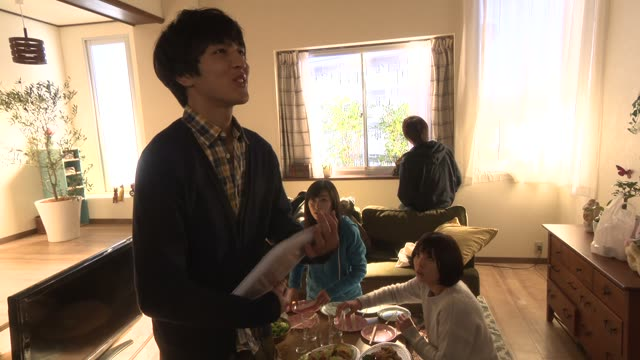
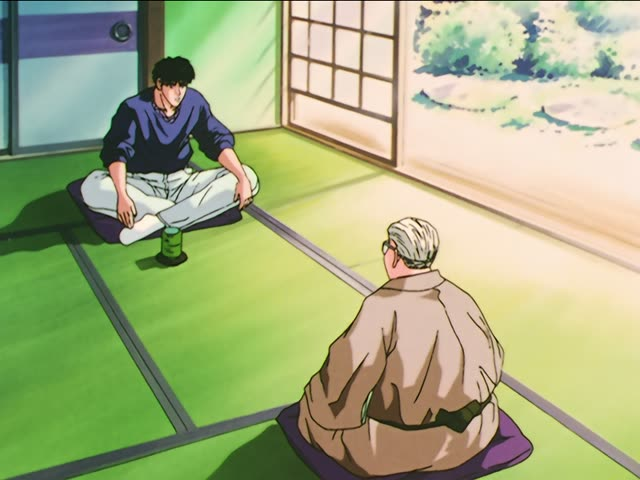
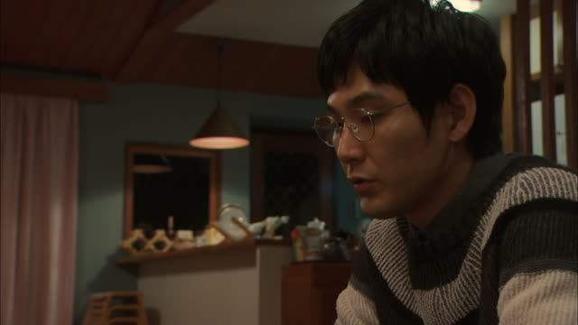
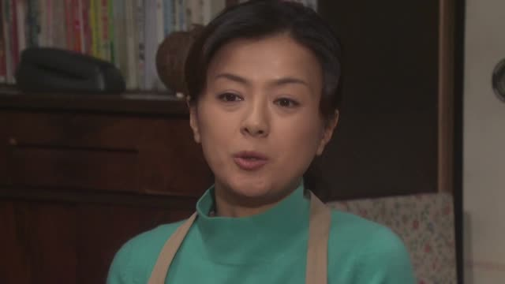
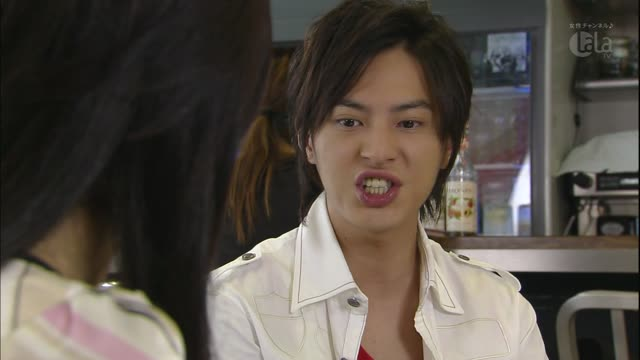
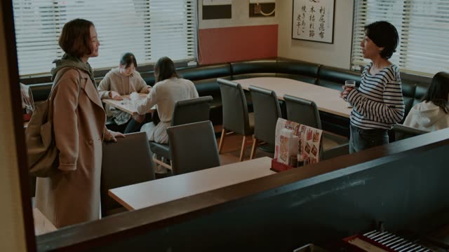
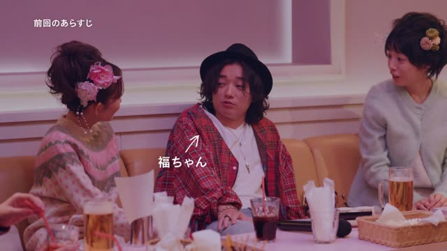
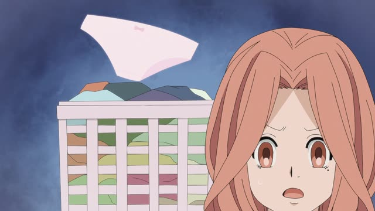

～ようと思う
| Polite | ～ようと思います |
|---|---|
| Casual | ～ようと思う |
Same meaning: "I'm thinking of doing it". Only the politeness changes.
Shirokuma Cafe · Episode 48
温泉に行こうと思ったんです。
"I was thinking of going to a hot spring."
Volitional + と思う means "I'm thinking of doing it, I plan to": 行こうと思う. You've made up your mind, or almost.
On this card, the sloth explains why he set off: he wanted to walk to a hot spring by himself. 思ったんです makes it polite.
思っている (思ってる) means you've been planning it for a while: 告白しようと思ってる.

Good Morning Call · Episode 7
今日、告白しようと思ってる。
"I'm planning to confess today."
On this card, Daichi tells Nao his plan. しようと思ってる: he's been thinking about it, and today's the day.
Quick Examples
Talking about next year.
来年、日本に行こうと思っています。
"I'm planning to go to Japan next year."
PoliteYour friend asks about the weekend.
部屋を掃除しようと思う。
"I think I'll clean my room."
CasualAt work, about a new course.
中国語を習おうと思います。
"I'm thinking of learning Chinese."
習う → 習おう.
PoliteYou're hungry late at night.
ラーメン食べようと思って。
"I was gonna eat ramen."
CasualWith and without
温泉に行きたい。
"I want to go to a hot spring." A wish.
温泉に行こうと思う。
"I'm thinking of going to a hot spring." A plan.
Examples from Media

Slam Dunk · Episode 87
アメリカに行こうと思っています。
"I'm planning to go to America."

Quartet · Episode 2
声をかけてみようと思いました。
"I decided I'd try talking to you."
みる → みよう: "try".

1 Litre of Tears · Episode 8
３月いっぱいで、仕事を辞めようと思うの。
"I'm thinking of quitting my job at the end of March."

Kekkon Dekinai Otoko · Episode 3
いや、ちゃんと事実を説明しようと思ってさ。
"Well, I meant to explain what really happened."

Brush Up Life · Episode 5
仕方ないから、１人でごはん食べようと思って。
"Nothing else to do, so I figured I'd eat alone."

Brush Up Life · Episode 3
音楽やろうと思っててさ。
"I've been thinking of doing music."

Kotaro Lives Alone · Episode 6
後で洗おうと思ってカゴに入れてたんだけど。
"I put them in the basket meaning to wash them later."